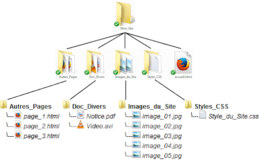

Comment fonctionne le Web
Dans cette session de formation nous allons découvrir ce que se passe quand on affiche une page web.
Affichage d'une page web
Pour affiche une page web par exemple www.codeur-academy.com, nous aurez besoin d'un navigateur internet d'un connexion d'internet.
Communication client serveur
Sur internet, l'affichage d'une page web nécessite l'intervention de deux machine. La machîne A qui affiche la page Web et la machine B qui serve la page à la machîne A.
Dans cette communication, on dit que la machîne A est le client et la machîne B est le serveur. on parle ici d'une communication client-serveur.
Dans la machine A, le navigateur joue le rôle de client, et dans la machîne B, une application dit serveur web joue le rôle de serveur.
Adresse IP
Chaque machine dans le réseaux internet est identifié par une adresse IP. Par exemple la machine A: est identifier par l'adresse : 192.168.1.19 et la machine B par l'adresse : 185.199.108.153
Exemple : Adresse IP de la page google.com
PS C:\Users\essarraj> ping google.com
Envoi d’une requête 'ping' sur google.com [142.250.201.46] avec 32 octets de données :
Réponse de 142.250.201.46 : octets=32 temps=234 ms TTL=117
Réponse de 142.250.201.46 : octets=32 temps=387 ms TTL=117
Réponse de 142.250.201.46 : octets=32 temps=302 ms TTL=117
Réponse de 142.250.201.46 : octets=32 temps=115 ms TTL=117
Nom de domaine
Pour consulter la première page web de notre site internet, nous avons utilisé le nom codeur-academy.com. Ce nom s'appelle nom de domaine.
Ce nom permet de situer le serveur sur internet grâce à un équipement, appelé DNS (Domain Name System) qui permet d’associer une adresse IP un nom de domaine.
Les noms de domaine ont été conçus pour simplifier l’utilisation de l’internet : il est plus facile de retenir et taper un nom de domaine qu’une adresse IP.
Protocole de communication
Pour communique deux ordinateur sur internet nous avons besoin d'un protocole de communication. Il définisse le language et les règle de communication entre le clients et le serveurs.
Pour la consultation de la page web, les deux ordinateur A et B ont utilisé le protocule http que nous allons découvrir dans cette session de formation.
Numéro de Port
Dans un réseau nous pouvons installer plusieurs application serveur comme le serveur Web, avec un seul adresse IP. Pour que cela soit possible, la notion de Port est inventé. Comme ça, pour demander le service web dans la machîne B nous devons déterminer le numéro du port de service Web qui prend la valeur par défaut : 80.
Échanger des données entre client et serveur
Deux ordinateurs en réseau peuvent s'échanger des données. Dans la plupart des cas ces échanges ne sont pas "symétriques" : en effet l' ordinateur A va souvent se contenter de demander des ressources (fichiers contenant du texte, photos, vidéos, sons...) à l'ordinateur B.
L'ordinateur B va lui se contenter de fournir des ressources à tous les ordinateurs qui lui en feront la demande. On dira alors que l'ordinateur A (celui qui demande des ressources) est un client alors que l'ordinateur B (celui qui fournit les ressources) sera qualifié de serveur.
Dans un mode de communication client-serveur, un serveur est un hôte sur lequel fonctionne un logiciel serveur auquel peuvent se connecter des logiciels clients fonctionnant sur des hôtes clients, un seul hôte peut contenir les deux client et serveur.
https://fr.wikipedia.org/wiki/Client-serveur

Ressource
Une ressource du World Wide Web est une entité informatique (texte, image,vidéo, fichier PDF, ..) accessible indépendamment d’autres ressources.
Protocole - HTTP
HTTP (pour HyperText Transfer Protocol) est le protocole de communication communément utilisé pour transférer les ressources du Web. HTTPS est la variante avec authentification et chiffrement.
Dans le cadre du web, les clients sont les navigateurs qui nous permettent d'accéder à des sites constitués de ressources hébergées par des serveurs . Ils respectent pour leurs échanges un langage et des règles communes qu'on appelle le protocole HTTP pour HyperText Transfer Protocol.
Chaque ressource fait l'objet d'un échange demande/retour entre le client et le serveur. Certaines demandes n'aboutissent pas, quand la ressource demandée n'existe pas par exemple. Ce sont les fameuses erreurs 404
Exemple d'une requête HTTP
Dans le protocole HTTP, une méthode est une commande spécifiant un type de requête, c'est-à-dire qu'elle demande au serveur d'effectuer une action. En général l'action concerne une ressource identifiée par l'URL qui suit le nom de la méthode.
Dans l'illustration ci-contre, une requête GET est envoyée pour récupérer la page d'accueil du site web www.codeur-academy.com :

Le navigateur effectue une requête HTTP Le serveur traite la requête puis envoie une réponse HTTP
URL - adresse web
Une URL (pour Uniform Resource Locator, signifiant littéralement « localisateur de ressource uniforme ») est une chaîne de caractères décrivant l’emplacement d’une ressource. Elle contient généralement dans l’ordre :
- le nom du protocole,
- un deux-points (:),
- deux barres obliques (//),
- un nom d’hôte,
- une barre oblique (/),
- et un chemin composé de texte séparés par des barres obliques. Exemple : http://example.com/un/chemin/page.html.
Dans la langue courante informelle, on parle aussi d'adresse web au lieu d'URL. En outre, lorsque l'on donne une adresse web, on omet généralement la partie initiale en http:// ou https:// des URL.
Dans la barre d'adresse de votre navigateur web vous trouverez, quand vous visitez un site, des choses du genre : "http://nsinfo.yo.fr/cours_histoire_info/histoire_info_pre.html". . La partie "/cours_histoire_info/histoire_info_pre.html" s'appelle une URL.
Une URL (Uniform Resource Locator) permet d'identifier une ressource (par exemple un fichier) sur un réseau.
L'URL indique « l'endroit » où se trouve une ressource sur un ordinateur. Un fichier peut se trouver dans un dossier qui peut lui-même se trouver dans un autre dossier... On parle d'une structure en arborescence, car elle ressemble à un arbre à l'envers :

Exemple d'une requête HTTP
Lorsque vous saisissez une adresse web dans votre navigateur :
- le navigateur demande l'adresse IP à un serveur spécial nommé "DNS".
- le navigateur envoie une requête HTTP au serveur pour lui demander d'envoyer une copie du site web au client. Ce message, et les autres données envoyées entre le client et le serveur, sont échangés par l'intermédiaire de la connexion internet.
- si le serveur accepte la requête émise par le client, le serveur envoie un message « 200 OK » au client qui signifie : « Pas de problème, tu peux consulter ce site web, le voici ». Ensuite le serveur commence à envoyer les fichiers du site web au navigateur.
- le navigateur affiche la page web sur votre écran